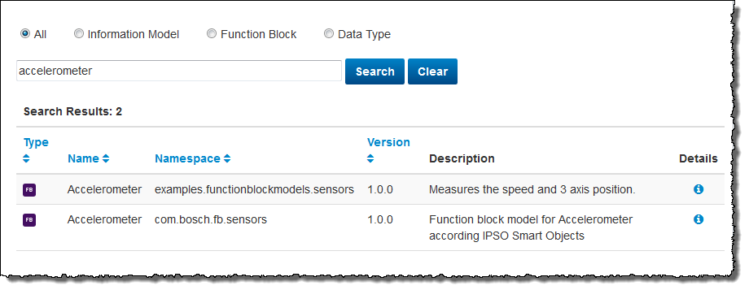
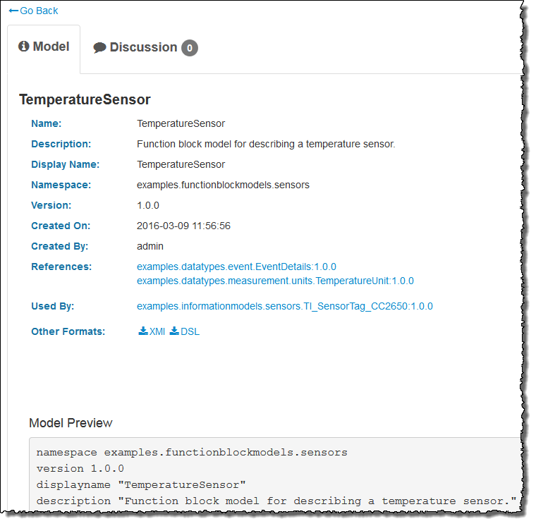
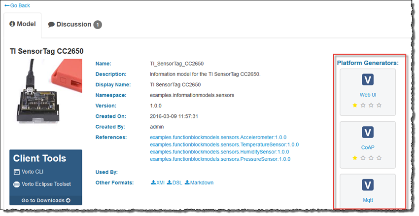
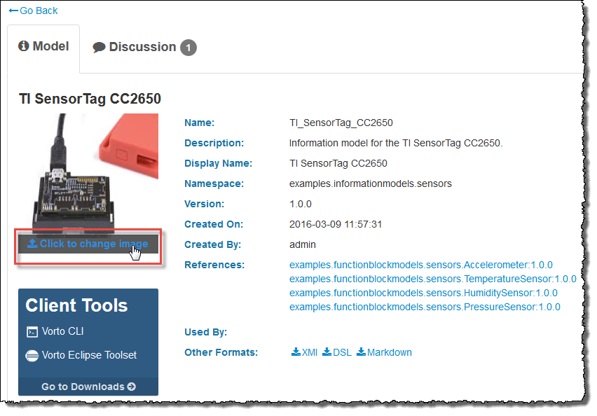
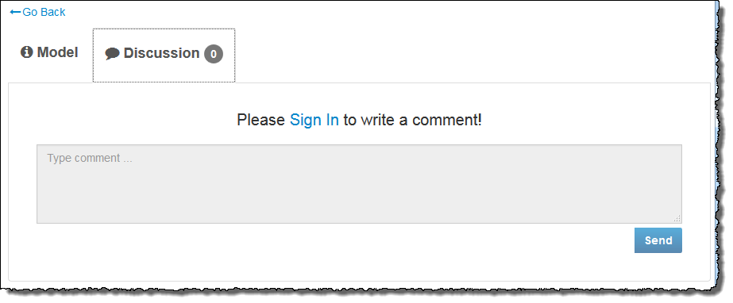

Searching Models Using the Vorto Repository Web Interface
This section details the following topics:
Searching Models
You can search for an existing model in the repository and use this shared model as reference in a local model project.
Prerequisites
You have opened the Vorto Repository Web interface (refer to Opening the Vorto Repository Web Interface).
Proceed as follows
- If the Search page is not displayed, click Search in the menu bar. The Search page displays the model table containing all shared models.
- To find a specific model, filter the model table in one or both of the following ways:
- Select the appropriate radio button according to the model type you want to search for.
- In the Search entry field, enter a search string to find the item you want, e.g., the function block
Accelerometer

- Click the Search button.
The model table is updated according to the filter criteria and displays a subset of all models now.
Details
Model
Prerequisites
The model table displayes the model(s) you want to display details of (refer to Searching Models).
Proceed as follows
- In the Details column of the model you want to get more information on, click the icon.
The information page of the model opens with the active Model tab.

Among other information on the model, the following data is essential:
- References
Displays the function block model or data type that the selected model is referencing to.
Click the link(s) to get more details. - Used by
Displays the model(s) model(s) using the selected model.
Click the link(s) to get more details. - Other Formats
Provides links for downloading the model definitions (XML, DSL or Markdown).
Click the appropriate link to download the model in the specific format. - Model Preview
Provides links for downloading the model definitions (XML, DSL or Markdown).
Click the appropriate link to download the model in the specific format. - Platform Generators (for information models only)
Provides download links for several platform generators with which you can generate code artifacts of your model (refer to Generating Code).

- References
- For the information model type, you can optionally upload or change a suitable image which will also be displayed in the Model tab.
For this, point to the image and click Click to change image.

Discussion
Prerequisites
The information tab of the model is displayed (refer to Model).
Proceed as follows
Click the Discussion tab.
The Discussion tab of the of the model’s information page becomes active.

In the entry field of the Discussion tab page, you can comment on the selected model.
| You must be logged in to be able to write comments (refer to Logging in). |